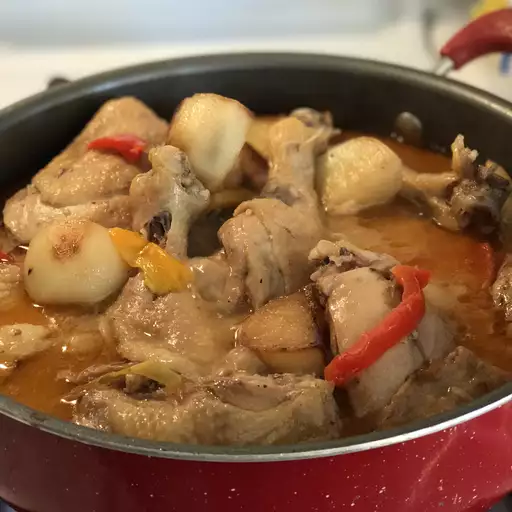

Ginataang Manok

This ginataang manok is a Filipino chicken dish flavored with ginger and coconut milk. Each family has their own version; this is my mother's. It's a rich dish that makes your kitchen smell so wonderful! Once my family smells the ginger frying and coconut milk simmering, they can't wait for it to be done so they can dig in. I salt it liberally, as the coconut milk tends to hide the salt flavor.
Ingredients
- 3 tablespoons canola oil
- 1/2 cup sliced fresh ginger
- 1 (5 pound) whole chicken, cut into pieces
- salt and ground black pepper to taste
- 2 (14 ounce) cans coconut milk
- 1 (10 ounce) package frozen chopped spinach, thawed and drained
Directions
- Heat oil in a large skillet over medium heat and stir in ginger. Cook and stir until fragrant and lightly browned. Remove ginger and set aside.
- Season chicken with salt and pepper. Place chicken in the same skillet over medium-high heat without crowding. Cook until chicken is lightly brown on all sides.
- Return ginger to the skillet and add coconut milk. Bring to a boil, then cover with the lid tilted to allow steam to escape. Reduce heat to medium-low and simmer, stirring occasionally, until chicken is no longer pink at the bone, about 30 minutes.
- Stir in spinach and simmer uncovered until spinach is warmed through, 8 to 12 minutes. Season with salt and pepper.
Back